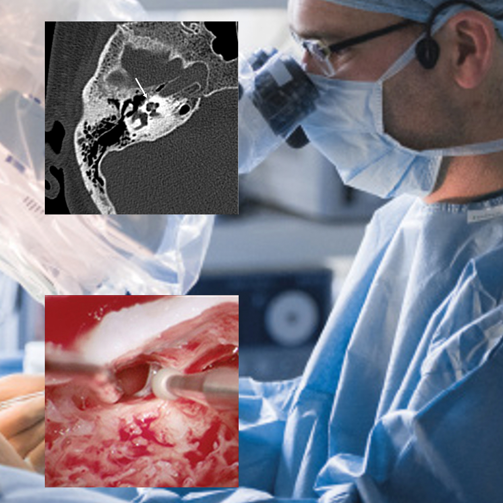
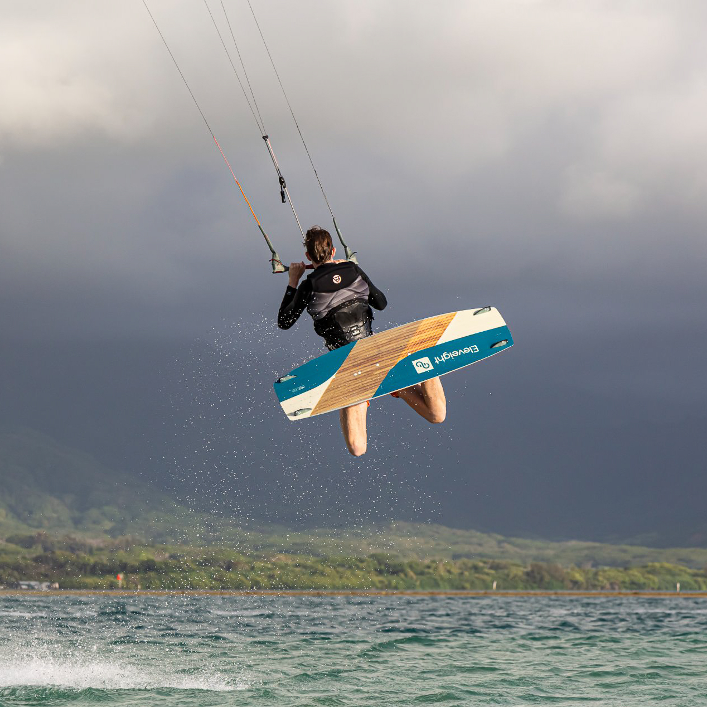
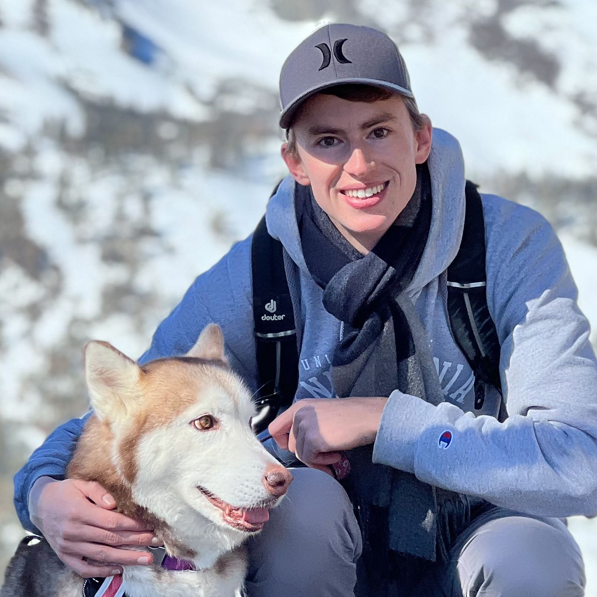
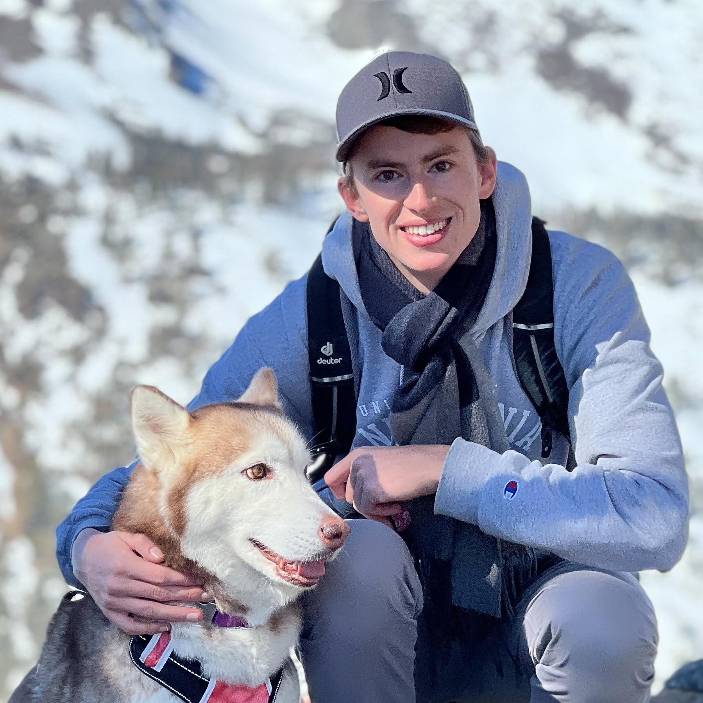
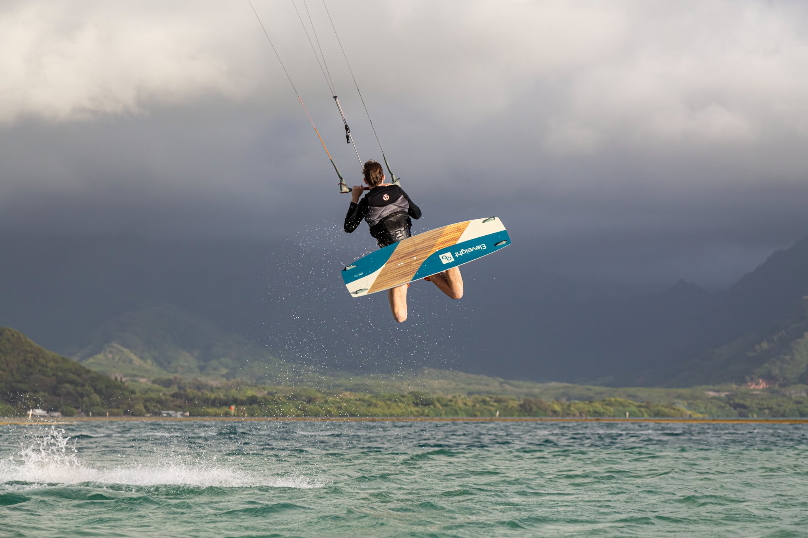
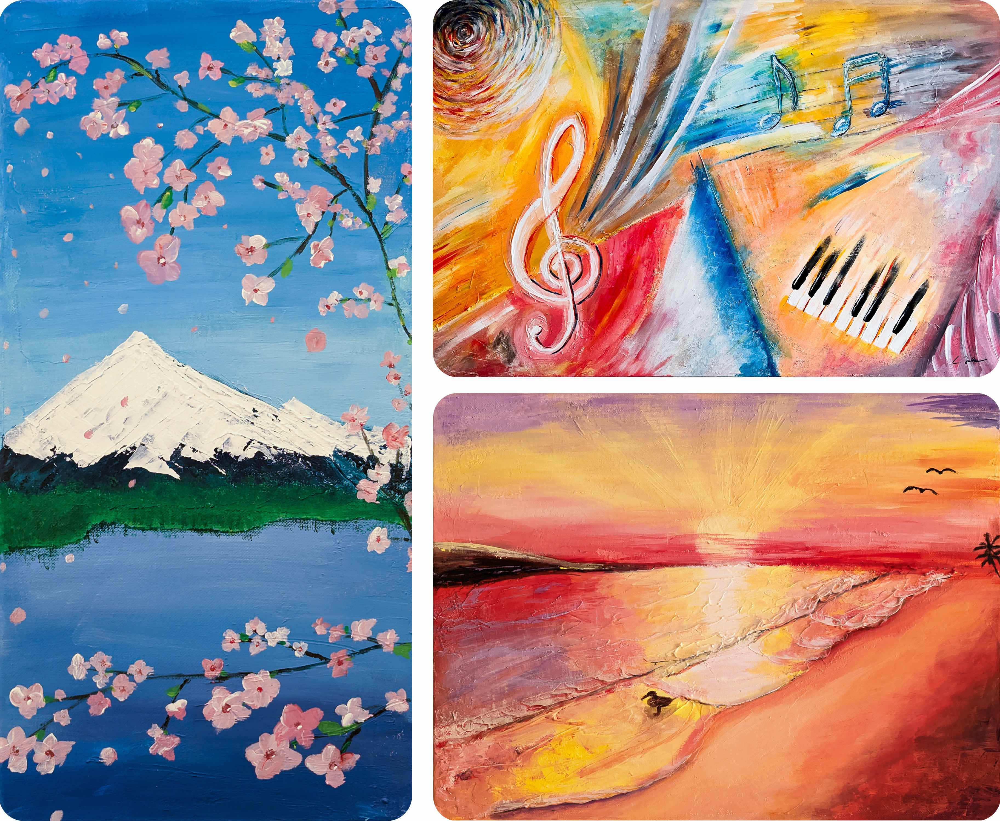

Generative AI for visual content — Phota Labs
Building model + serving infrastructure for a generative visual-content product. Co-author on the company's technical write-ups; product detail on request.
Four years on Marc Levoy's computational photography team at Adobe, shipping the Adobe Adaptive Profile in Camera Raw to millions of photographers. Now at Phota Labs on generative AI for visual content. The work is engineering — making AI features run reliably, on real users' devices, at scale.
The seam between research and product is where I'm most useful — and where most of my work lives. Most of it is invisible from the outside; the section below is the visible part.
I'm currently at Phota Labs working on generative AI for visual content — the kind of model work that has to survive a real user pressing a button and getting back a result they want to keep. Before that I spent four years on Marc Levoy's computational photography team at Adobe, mostly on Camera Raw, where the same constraint applied at a much larger scale.
I take features from a paper-grade prototype to something that runs on a real device, every time, without surprising anyone. Sometimes the engineering rises to a publication; more often it just ships. I prefer to ship.
Production AI features I contributed to, with the specific thing I owned called out. Engineering at research-grade depth — but the deliverable is the product, not the paper.
Adobe Camera Raw · Oct 2024 · used by millions
A learned, scene-adaptive raw-rendering profile shipped in Camera Raw and Lightroom. I worked on the production model and dataset pipeline that took the technique from prototype to a feature you can turn on in Camera Raw today.
Building model + serving infrastructure for a generative visual-content product. Co-author on the company's technical write-ups; product detail on request.

Multiple features in the Camera Raw / Lightroom rendering pipeline beyond Adaptive Profile. Image-quality work that ships only when it's invisible — full list available on request.

Image-processing pipelines for early microLED displays. The work shipped into prototype hardware; Raxium was acquired by Google in 2022.
Caliber evidence, not a CV section. The work above is the day job; these are the times the engineering rose to something publishable.
Real portfolio, not a hobby footnote. Hand-curated; full-resolution available on click. Filters narrow by subject — themed sections are the next iteration.






One performance, embedded. Lite-YouTube on the production site — load on click, no third-party JS until then.
Schubert · Impromptu Op. 90 No. 3
Recorded at home. Imperfect, intentionally posted anyway — the same way I publish photographs.
More on YouTube →
One piece included for a reason: I want it visible that the visual instinct is older than the engineering one. The full set lives elsewhere.
See more →Born in Germany, schooled at RWTH Aachen (BS, EE/IT) and Stanford (MS, EE). Four years at Adobe on Marc Levoy's computational photography team, mostly on what shipped in Camera Raw. Currently at Phota Labs on generative AI for visual content. Before that, the compute team at Raxium (acquired by Google).
Outside the engineering: classical piano since I was a kid, photography that actually leaves the house, and Lucy — Siberian husky, much louder than I am. I write the way I'd talk; I'd rather be specific than slick.
Open to conversations about AI engineering for creative tools, computational photography, generative visual systems, and image-quality work that ships. If any of those overlap with what you're building, please get in touch.